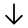
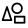

Khal Docs v0.1.3 α
Warning
Everything here is subject to change!!! This is work-in-progress!
Warning
This document assumes you have a general idea of how Ithkuil noun derivation works. I will rephrase stuff later to ger rid of this assumption.
Phonology
Consonants
Here is the consonant table:
 The consonants are: b c č d đ f g h j k l ļ m n ň p r s š t ţ v w x y z ž ż ‘.
The consonants are: b c č d đ f g h j k l ļ m n ň p r s š t ţ v w x y z ž ż ‘.
c makes the sound [ts]
j makes the sound [dʒ]
r makes the sound [ɾ] or [r]
y makes the sound [j]
č makes the sound [tʃ]
đ makes the sound [ð]
ļ makes the sound [ɬ]
ň makes the sound [ŋ]
š makes the sound [ʃ]
ţ makes the sound [θ]
ż makes the sound [dz]
ž makes the sound [ʒ].
Aspiration and Palatalization
The sounds m, n, p, t, b, d, ż, j, c, č, v, f, đ, ţ, z, s, ļ, z̧, ž, š, x, h are capable of being palatalized. Palatalization can either be marked with ʸ or with a circumflex. When you need to use a circumflex on top of a letter with a caron or breve, the diacritics turn to a ring.
Vowels
The base vowels are: a ȧ ä ă/ъ å e ĕ ė ë į i ĭ ï o ȯ ö u u̇ ü ŭ
ȧ makes the sound [ɑ] or [ai]
ä makes the sound [æ]
ă/ъ make the sound [ɤ] or [au]
å makes the sound [ɔ] or [oi]
ĕ makes the sound [ɛ] or [ei]
ė makes the sound [eu]
ë make the sound [ə] or [ʌ]
ï makes the sound [ɯ]
ĭ makes the sound [ɪ] or [oa]
į makes the sound [ɨ]
ȯ makes the sound [œ] or [ou]
ö makes the sound [ø]
u̇ makes the sound [ʉ] or [ui]
ü makes the sound [y]
ŭ makes the sound [ʊ] or [ue].
It is permissible to write the dipthongs as two seperate letters (“å” as “oi”), but this is only meant for informal writing.
Nasalization and Length
All vowels are capable of nasalization and length.
Length is marked with a macron (ā, ē, ī). If you can’t use a macron, either an under-diaresis (i̤, o̤, ṳ) or a colon (i:, o:, u:) is acceptable.
Morphology
| I | II | III | IV | V | VI | VII | . | . |
|---|---|---|---|---|---|---|---|---|
| ((CH) | VS)) | CR | ((VC | (CC)) | (VXCS…)+VT | (CE)) | [Tone] | WIP |
| Collectivity + Abstraction or Numeric Operation | Stemlet | Root | Case or Aspect+Mood | Configuration + Number | Suffix and Degree | WIP or Source (evidentiality) | word class |
Roots
The language has a root system reminiscent of Ithkuil. But while every Ithkuil root has to conform to the same root template with 3 stems and 4 specifications, Khal roots don’t have this limitation. Every root could (hypothetically) have from 1 to 80 stemlets though roots rarely reach those extremes. While roots could also hypothetically be randomly organised, each root generally fits into a set of templates. Here is the table of the root -KH-:
| Stem 1: | Stem 2: | Stem 3: | A |
|---|---|---|---|
| language of khal | khal word | grammar of khal | Basic |
| use(age) of khal | use(age) of khal word | use(age) of khal grammar | Content |
| medium of khal (paper, sound) | (be) medium of khal word (paper, sound) | (be) medium of khal grammar (paper, sound) | Constitutor |
| utter(ance of) khal | utter(ance) of khal word | discuss(ion) of khal grammar | Object |
| speaker of khal | speaker of khal word | grammarian of khal | Person |
The letter “A” in the right corner signifies that this fits in the A template of roots. Here is the template of A roots:
| Stem 1: | Stem 2: | Stem 3: | A |
|---|---|---|---|
| sl 1 | sl 6 | sl 11 | Basic |
| sl 2 | sl 7 | sl 12 | Content |
| sl 3 | sl 8 | sl 13 | Constitutor |
| sl 4 | sl 9 | sl 14 | Object |
| sl 5 | sl 10 | sl 15 | Person |
sl stands for stemlet here. Check out Root Templates for the list of all root templates.
Here is the root -MR- (‘DOMESTIC CAT’) that I will use in most examples:
| Stem 1: | Stem 2: | Stem 3: | Stem 4: | Stem 5: | Stem 6: | A6 |
|---|---|---|---|---|---|---|
| domestic cat | food of domestic cat | toy of domestic cat | (do) the action of meowing | (do) the action of purring | (do) the action of chirping | Basic |
| essence of domestic cat | ingredient of cat food | components of cat toy | the sound of the meow | the sound of the purring | the sound of the chirp | Content |
| body of domestic cat | container of cat food | box of cat toy | the meowing cat | the cat that purrs | the cat that chirps | Constitutor |
| act as domestic cat | making cat food | playing with cat toy | hearing the meow | hearing the purr | (action of) hearing the chirp | Object |
| friend of domestic cat | buy(er) of cat food | buy(er) of cat toy | the entity that causes the cat to meow | the entity that causes the cat to purr | the entity that causes the cat to chirp | Person |
Note
Roots can never have palatal consonants!
Stemlets
Here is a table of the first 80 stemlet vowels:
| a | ȧ | ä | ъ | å | e | ĕ | ė | ë | į | i | ĭ | ï | o | ȯ | ö | u | u̇ | ü | ŭ |
|---|---|---|---|---|---|---|---|---|---|---|---|---|---|---|---|---|---|---|---|
| a: | ȧ: | ä: | ъ: | å: | e: | ĕ: | ė: | ë: | į: | i: | ĭ: | ï: | o: | ȯ: | ö: | u: | u̇: | ü: | ŭ: |
| oö | oä | oe | oü | ïa | ïe | öa | öe | öi | öu | öä | öë | oë | uo | uü | üu | ëo | ëö | aï | eï |
| oö: | oä: | oe: | oü: | ïa: | ïe: | öa: | öe: | öi: | öu: | öä: | öë: | oë: | uo: | uü: | üu: | ëo: | ëö: | aï: | eï: |
As you can see on the table, length adds +40.
Examples:
sl 1 amr: a cat.
sl 5 åmr: friend of a cat.
sl 11 imr: a cat toy.
sl 22 ȧ:mr: a meowing cat.
When the stemlet is omitted (mr: cat), it is assumed to be the stemlet 1. Therefore mr is identical to amr.
Cases
| I | II | III | IV | V | VI | VII | . | . |
|---|---|---|---|---|---|---|---|---|
| ((CH) | VS)) | CR | ((VC | (CC)) | (VXCS…)+VT | (CE)) | [Tone] | WIP |
| Collectivity + Abstraction or Numeric Operation | Stemlet | Root | Case or Aspect+Mood | Configuration + Number | Suffix and Degree | WIP or Source (evidentiality) | word class |
The default value of the VC slot is -a-.
For example amra is identical to amr because the last a is already the default. (amra is identical to amr which is identical to mra, but we will not omit the stemlet in examples below for demonstration.)
Here are a list of cases:
Relational
Wip
this place will be filled later
- Object
-
Default value. Has the value -a-. The (usually inanimate) participant of the sentence which isn’t really affected or does anything. For example: “Kate wants the cat.”. Is the cat aware of this? Maybe. Is it affected, i.e. is it changed in any way? No. Did the cat do anything? No. So it is an object here.
amra
- Tool
-
The thing used to do the action. The pen in “He signed the document with his pen”.
amro: “using the cat”
- Patient
-
The entity affected by the action. “Kate fed the cat”. Did the cat got affected? Yes. Did it do the action? No. So it is a patient.
amre
- Experiencer
-
The entity who was forced to experience something. “The cat sneezed”. Did the cat do the action? Not really. It sneezed without his will. So the cat is the experiencer.
amru
- Representer
-
Quote from Ithkuil: “It indicates the party/entity/idea/thought/situation or mental state which triggers an unwilled, affective response or is the trigger for an existential states with no tangibly affected patient”.
For example: “The hammer exemplifies toolship”: The hammer neither does anything or is getting affected. It rather triggers or represents the idea of what it means to be a tool.
“The cat possesses a toy”: The cat is neither the doer or the doee here. The cat owning a toy triggers the state of possession.
“That book contains poems”: The poems that are in the book trigger the state of containing something.
Hope I explained it well enough.
amră
- Effector
-
The entity is changing or affecting the patient in some way. “Kate hits the cat :(” Kate here has unfortunately affected the cat by hitting it.
amri
- Reciever
-
The entity that is recieveing something as a result of communication, transfer, transmisison or trade. Some examples: Give the dog a bone, I’ll tell her your secret, The host introduced me to the guests.
amrï
- Double-roled
- Simultaneously the effector and the patient. For example:
“She dressed herself”: She both dressed someone and got dressed herself.
“We talked for a few minutes”: That “we” has both the talker and the listener inside of it so it counts.
*amrö*
| Object | Tool | Patient | Experiencer | Representer | Effector | Receiver | Double-Rolled |
|---|---|---|---|---|---|---|---|
| a | o | e | u | ă | i | ï | ö |
Locational
Direction of Movement
- To
- Specifies direction towards.
- From

- Specifies direcion from.
- No Movement

- Specifies no movement, only location. So the question of direction of movement is invalid.
Location
- [vague] 
- Only describes that the location is there, doesn’t specify inside, above, near etc.
- On Surface

- On the surface of.
- Near
- In the vicinity of.
- Inside
- Inside of (a container, a building etc.)
- Under
- Below of.
- Above
- Above of. (Can either be on the surface or floating or on top of something which is above of the entity)
- Front
- In posterior of.
- Behind
- In anterior of.
| vague | on surface | near | inside | under | above | front | behind | |
|---|---|---|---|---|---|---|---|---|
| from | ȯ | ȧ | ı̆ | ë | öi | öu | uo | į |
| to | oe | ïe | öë | ëö | ïë | üu | ëo | aï |
| at | ė | oü | å | u̇ | ä | ü | ĕ | ŭ |
Temporal
- At Time
- At this time.
Other
- Description
- Turns it into an adjective. “could be described as having X properties”
For example: mröä kh: the khal language that could be describes as having “cat” properties.
That’s how you derive adjectives like “green” or “34” from “greenness” or “34-ness”
- Conjunction
- Turns it into a conjunctor that takes two inputs from both sides.
This is meant to be used with roots like “and” and “or”, but you could technically use this case with every root. Though the meaning of that conjunction would be up to the speaker.1
For example: mröï: [cat conjunction]
- Equative
- Forms phrases like “as ‘X property’ as …“
For example: mrïakh: as cat-ic as Khal.
| description | conjunction | equative |
|---|---|---|
| öä | öï | ïa |
Configuration
When the configuration is omitted, it is assumed to be a monad (a single entity).
Numbers
- Monad
-
Default value. Has the consonant value -l-. Represents a single entity.
amral (amra/amr): a cat.
- Dyad
-
Represents two entities treated as a unit.
amrat: a pair of cats.
- Triad

-
Represents three entities treated as a unit.
amrađ: a group of three cats.
- Polyad

-
Represents more than 6 entities as a unit.
amraw: a group of more than 6 cats.
- Pleiad
-
Represents one than one entity as a unit.
amrah: a group of more than 1 cat.
- Hikanad
-
Represents an enough amount of entities as a unit. The criteria of “enough” is based on context.
amray: an enough amout of cats
- Kenad
-
Respesents zero entities as a unit.
amrar: zero cats.
- Meriad

-
Represents a fractional amount of entities as a unit.
amras: a part of a cat.
Forms
Monads do not fit into any of these categories so monads are classified as vague.
Relation
- Fused
-
Different entities joined into a blob with no boundaries.
amram: two similar cats fused together. (by an evil scientist I suppose)
- Connected
-
Either physically tied or touching, or metaphorically related.
amraż: three cats either tied together, in contact, or related in some way
- Seperate
-
Neither connected or fused
amrax: a few unrelated seperate cats.
Similarity
- Similar
-
Entities that share properties with each other.
amrad: a pair of similar cats.
- Dissimilar 
-
Entities that dont share any properties with each other.
amrap: a pair of cats that look unlike.
- Vague

-
Similarity not specified.
amrat: a pair of cats.
| fus sim | fus dsm | con sim | con dsm | sep sim | sep dsm | vague | |
|---|---|---|---|---|---|---|---|
| monad | ∅ | ∅ | ∅ | ∅ | ∅ | ∅ | l |
| dyad | m | n | g | b | d | p | t |
| triad | ň | k | ż | j | č | v | đ |
| polyad | mʸ | nʸ | gʸ | bʸ | dʸ | pʸ | w |
| pleiad | š | ž | ţ | f | ļ | x | h |
| hikanad | šʸ | kʸ | ţʸ | fʸ | sʸ | lʸ | y |
| kenad | r | r | r | r | r | r | r |
| meriad | s | s | s | s | s | s | s |
Verbs
| I | II | III | IV | V | VI | VII | . | . |
|---|---|---|---|---|---|---|---|---|
| ((CH) | VS)) | CR | ((VC | (CC)) | (VXCS…)+VT | (CE)) | [Tone] | WIP |
| Collectivity + Abstraction or Numeric Operation | Stemlet | Root | Case or Aspect+Mood | Configuration + Number | Suffix and Degree | WIP or Source (evidentiality) | word class |
The verbs are generally marked by a mid tone on the penultimate syllable. This mid-tone is marked by either a high-dash (‾) or an apostrophe (‘). Question verbs have 2 equivilant ways to mark question:
Example: ‘amr: to be a cat
- Either use the according vowel in the Case slot or
-
Pronounce the penultimate syllable with a rising tone (marked with ¨ or ? at the start of the word)
Example: ?amr or ¨amr: is X a cat?
Example sentences:
‘imr kh: The Language of Khal is a cat toy.
[verb]-sl11-'cat toy' 'khal language'
Reminder
kh = kha = khal = akh = akha = akhal because -a- and -l- are default values here.
?ȧkh ömr: Is meowing (the same as) speaking Khal?
[ques]-sl9-'khal language' sl2-'meow'
CH (Collectivity + Abstraction or Numeric Operation) Values
The reason palatalized consonants are nnot allowed in roots is that they are used here. So it doesn’t become ambiguous whether a word is CH+STEMLET+ROOT (tʸamr) or ROOT+CASE+CONFIG (mrat).
- Abstraction

- The abstract general idea of something. Has the value -tʸ-.
“I like cats”. This “cat” isn’t a specific cat, it is an idea of a cat. So it would be tʸamr (tʸamra) here.
- Individuality
- Turns “… entities as one unit” into individual entities. -šʸ-.
For example: amrat: a pair of cats
šʸamrat: two cats.
This allows to omit the number adjectives and embed the amount inside the word.
- Operations
- Does operations with the preceding operation. The preceding number inherits the case of the following number, so you can omit the case of the preceding number.
Operations in the Number System section!
ъxu mr: 4 cats
ъx sʸȧxu mr: 4+2 cats.
Reminder
More to come later.
Suffixes
| I | II | III | IV | V | VI | VII | . | . |
|---|---|---|---|---|---|---|---|---|
| ((CH) | VS)) | CR | ((VC | (CC)) | (VXCS…)+VT | (CE)) | [Tone] | WIP |
| Collectivity + Abstraction or Numeric Operation | Stemlet | Root | Case or Aspect+Mood | Configuration + Number | Suffix and Degree | WIP or Source (evidentiality) | word class |
Suffixes belong to the (VXCS…)+VT slot. Suffixes also have degree templates like how roots have stemlet templates. The stem templates are grouped with the root templates. So roots can technically use affix templates and affixes can use root templates.
Degree vowels are identical to stemlet vowels.
For example, here is the affix -š:
| R |
|---|
| Strength from “extremely weak” (1) to “absolutely strong” (9) |
Number System
Here is the root -X-:
| N |
|---|
| Stemlet numbers indicate cardinal numbers between 1-71. 72rd stemlet is zero. |
Here is the root -G-:
| N |
|---|
| Stemlet numbers between 1-71 indicate cardinal number multiples of 72. 72nd stemlet is zero. |
Here is the root -GR-:
| N |
|---|
| Stemlet numbers between 1-71 indicate cardinal number multiples of 722. 72nd stemlet is zero. |
Khal is base 72. Here are some examples of numbers:
x: one.
ïx: thirteen.
Note
Update the examples below asap
ą̇̄χ: sixty-one.
ğ: five-thousand one-hundred and eighty-four.
į̄̇ğ: three-hundred sixty-eight thousand and sixty four.
ïχu mr: thirteen cats.
ïχu mram: thirteen pairs of cats.
ą̇̄χađʸ: 6 groups of 61.
ą̇̄χuđʸ mr: 6 groups of 61 cats.
ą̇̄χuđʸ mraċ: 6 groups of 61 groups of 5 cats.
sl13-'thirteen'-DESC 'cat'-OBJ-dyad
| I | II | III | IV | V | VI | VII | . | . |
|---|---|---|---|---|---|---|---|---|
| ((CH) | VS)) | CR | ((VC | (CC)) | (VXCS…)+VT | (CE)) | [Tone] | WIP |
| Collectivity + Abstraction or Numeric Operation | Stemlet | Root | Case or Aspect+Mood | Configuration + Number | Suffix and Degree | WIP or Source (evidentiality) | word class |
CH has special values for numbers. They are:
- Subtraction: sʸ
- Addition: ţʸ
When these values are used on a number, it signifies a numeric operation with the preceding number.
x sʸax: one plus one.
This is how you express numbers that don’t fit in roots -χ- and -Γ-:
ggr sʸax: 5185. (lit. 722 + 1) '72 squared' ADD-sl1-'one'
-
This allows for some wiggle-room that allows the speaker to use and give meaning to conjunctions that aren’t defined by the language docs.̧ ↩